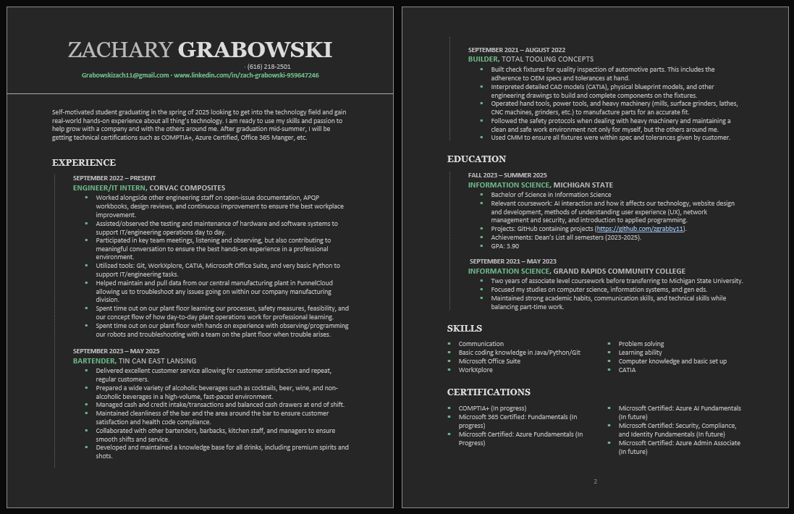

About Me

As a recent MSU grad like mentioned before, I love all things tech including experience with coding languages HTML, Java, Python, and CSS. I also have real hands on experience and enjoying working with computers and troubleshooting technical and software problems. I have a strong understanding of all things Microsoft Office Suite and working in technical folders.
When I am not face deep in technology, I love to be outside. Whether it is playing pickleball, fishing with friends, or golfing with friends you can always catch me outside. I follow sports as well including baseball, hockey, and football mostly. Here are some of my teams:
Sports Teams I Follow:
- Ohio State
- Pittsburgh Steelers
- Pittsburgh Penguins
- Pittsburgh Pirates
Resume
